<title>Label Leading Compare</title>
<link rel="stylesheet" href="https://fonts.googleapis.com/css2?family=IBM+Plex+Mono:wght@400;600&family=IBM+Plex+Sans:wght@400;600&display=swap">
<style>
:root{--bg:#f5f1e6;--card:#fffdf7;--ink:#161a17;--muted:#5d665f;--line:#d9d3c2;--accent:#00753a;--pick:#e3f1e8;color-scheme:light}
@media (prefers-color-scheme:dark){:root:not([data-theme="light"]){--bg:#121613;--card:#1a1f1b;--ink:#ece8dc;--muted:#a3ab9f;--line:#2f3730;--accent:#5fcf8e;--pick:#1d3325;color-scheme:dark}}
:root[data-theme="dark"]{--bg:#121613;--card:#1a1f1b;--ink:#ece8dc;--muted:#a3ab9f;--line:#2f3730;--accent:#5fcf8e;--pick:#1d3325;color-scheme:dark}
body{background:var(--bg);color:var(--ink);font:15px/1.55 "IBM Plex Sans",system-ui,sans-serif;padding:32px 16px 64px}
main{max-width:1100px;margin:0 auto;display:grid;gap:48px}
h1{font:600 28px/1.15 "IBM Plex Mono",ui-monospace,monospace;margin:0;text-wrap:balance}
h2{font:600 18px/1.3 "IBM Plex Mono",ui-monospace,monospace;margin:0;text-wrap:balance}
p{margin:0;max-width:68ch}
.eyebrow{font:600 11px/1 "IBM Plex Mono",monospace;letter-spacing:.1em;text-transform:uppercase;color:var(--accent)}
section{display:grid;gap:16px}
.grid{display:grid;grid-template-columns:repeat(auto-fit,minmax(240px,1fr));gap:16px}
figure{margin:0;background:var(--card);border:1px solid var(--line);border-radius:6px;padding:12px;display:grid;gap:8px;align-content:start}
figure.pick{border-color:var(--accent);background:var(--pick)}
figure img{width:100%;height:auto;display:block;border-radius:3px}
figcaption{font:13px/1.4 "IBM Plex Mono",monospace;display:flex;justify-content:space-between;gap:8px;flex-wrap:wrap}
figcaption b{font-weight:600}
.tag{font-size:11px;letter-spacing:.08em;text-transform:uppercase;color:var(--accent);font-weight:600}
.num{font-variant-numeric:tabular-nums;color:var(--muted)}
.verdict{border-left:3px solid var(--accent);padding:4px 0 4px 12px}
code{font:13px "IBM Plex Mono",monospace}
</style>
<main>
<header style="display:grid;gap:12px">
  <span class="eyebrow">#2667 · type system walk #2490</span>
  <h1>How tall should a label line be when it wraps?</h1>
  <p><code>text-label</code> has line-height 1. That is right for a one-line label. Two components wrap their label and work around it with <code>leading-snug</code> (1.375). Real screenshots from kcvv-nextjs.vercel.app at 375px, 2026-09-29. Only the line-height changes between the pictures.</p>
</header>

<section>
  <span class="eyebrow">1 · Pick the value</span>
  <h2>TicketStub — 3-line meta on /evenementen</h2>
  <div class="grid">
    <figure>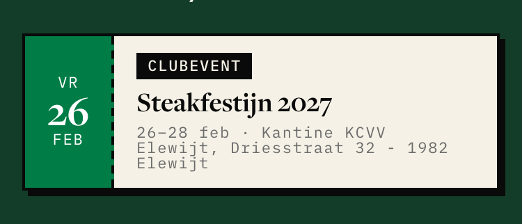<figcaption><b>1 (token now)</b><span class="num">33px</span></figcaption></figure>
    <figure>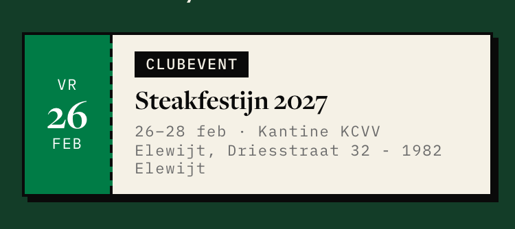<figcaption><b>1.2</b><span class="num">40px</span></figcaption></figure>
    <figure class="pick">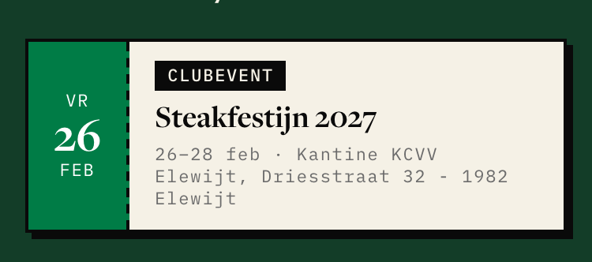<figcaption><b>1.3</b><span class="tag">decided</span><span class="num">43px</span></figcaption></figure>
    <figure>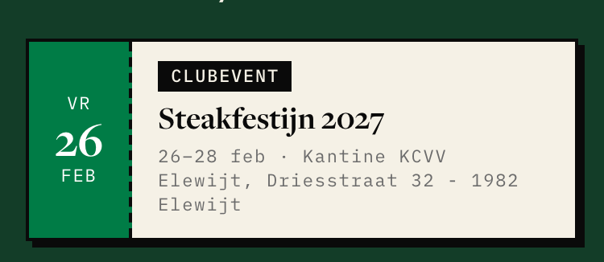<figcaption><b>1.375 (snug, live)</b><span class="num">45px</span></figcaption></figure>
  </div>
  <h2>EventHero — 2-line location on /evenementen/ek-darts</h2>
  <div class="grid">
    <figure>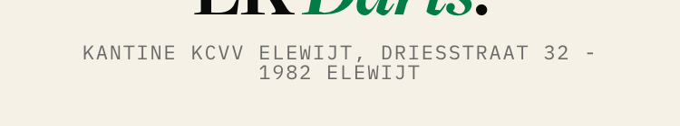<figcaption><b>1 (token now)</b><span class="num">22px</span></figcaption></figure>
    <figure><figcaption><b>1.2</b><span class="num">26px</span></figcaption></figure>
    <figure class="pick">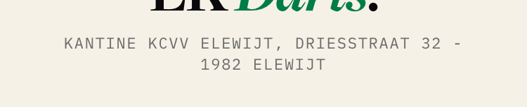<figcaption><b>1.3</b><span class="tag">decided</span><span class="num">29px</span></figcaption></figure>
    <figure>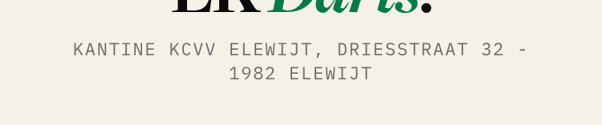<figcaption><b>1.375 (snug, live)</b><span class="num">30px</span></figcaption></figure>
  </div>
  <p class="verdict"><b>Decided 2026-09-29: 1.3.</b> At 1 the lines nearly touch. 1.3 gives them room. The step becomes one <code>@theme</code> leading token, <code>--leading-label-wrap: 1.3</code>, like <code>--leading-hero</code>. Both wrapping sites use it and drop <code>leading-snug</code>.</p>
</section>

<section>
  <span class="eyebrow">2 · Why not raise the token itself</span>
  <h2>Option B moves every one-line label</h2>
  <div class="grid">
    <figure>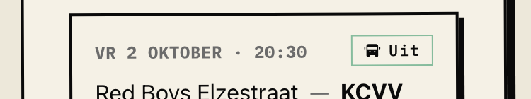<figcaption><b>Pill · 1</b><span class="num">22px</span></figcaption></figure>
    <figure>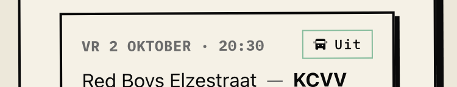<figcaption><b>Pill · 1.3</b><span class="num">25px</span></figcaption></figure>
    <figure><figcaption><b>Link · 1</b><span class="num">27px</span></figcaption></figure>
    <figure><figcaption><b>Link · 1.3</b><span class="num">30px</span></figcaption></figure>
  </div>
  <p class="verdict">Every label box grows by 3px. The home page alone has 41 labels, and nearly all are one line. The gain is small and it needs a site-wide VR bot run. So: keep the token at 1.</p>
</section>

<section>
  <span class="eyebrow">3 · A fact, not a choice</span>
  <h2>MatchStrip <code>leading-none</code> on mono text (5 sites)</h2>
  <div class="grid" style="grid-template-columns:1fr">
    <figure>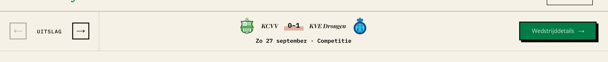<figcaption><b>leading-none (now)</b><span class="num">strip 85px</span></figcaption></figure>
    <figure>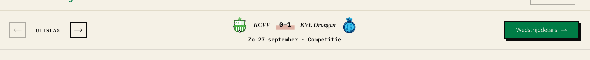<figcaption><b>token 1.4</b><span class="num">strip 85px</span></figcaption></figure>
  </div>
  <p class="verdict">The strip stays 85px in both. The flex row centres the text, so the override does nothing you can see. It is dead code, like the 12 <code>text-label leading-none</code> sites. Delete it. No exception is needed.</p>
</section>
</main>
